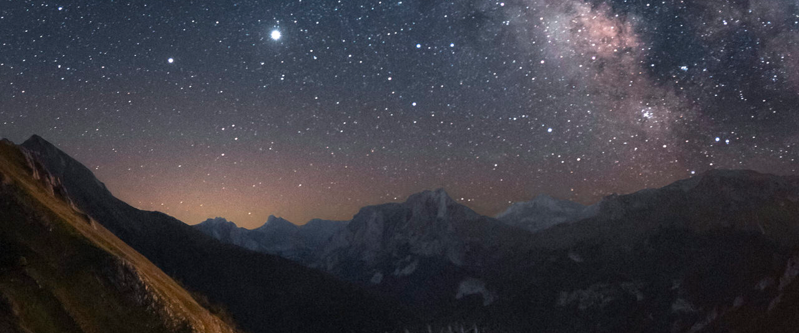

Cielo nocturno sobre el Valle del Lago, Somiedo
AstroClub Somiedo
Un cielo protegido para descubrir las estrellas
Equipo de comunicación
AstroClub Somiedo es una asociación sin ánimo de lucro nacida en el Valle del Lago, en pleno corazón de la Reserva Starlight. Apostamos por la divulgación responsable y por acercar el cielo nocturno a cualquier persona.
Nuestras instalaciones reciben cada semana a decenas de voluntarios y familias interesadas en la astronomía.